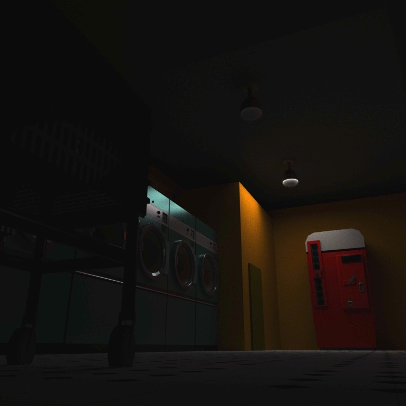
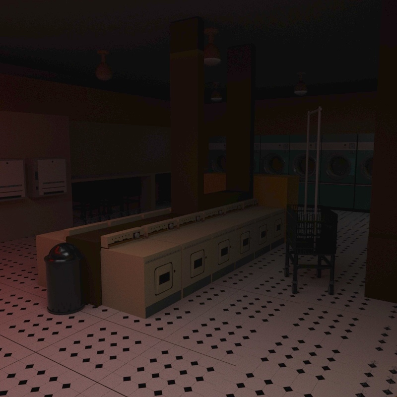

"MAT"
8.22.20
Before I started to study programming along with 3D modeling I had worked the night shifts at a laundry mat. Personally I thought the job was nice but was not being paid enough for the amount of time given so I wanted to create a model based of a classic laundry mat based of the 1960's